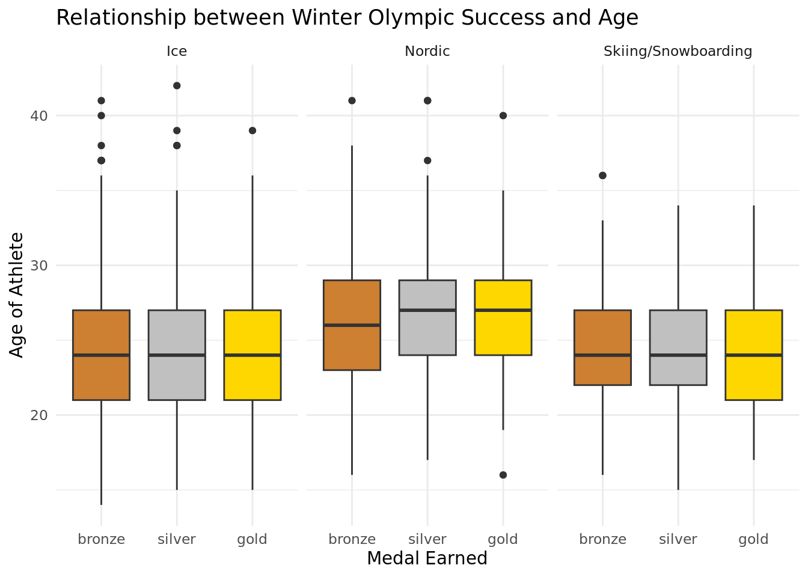
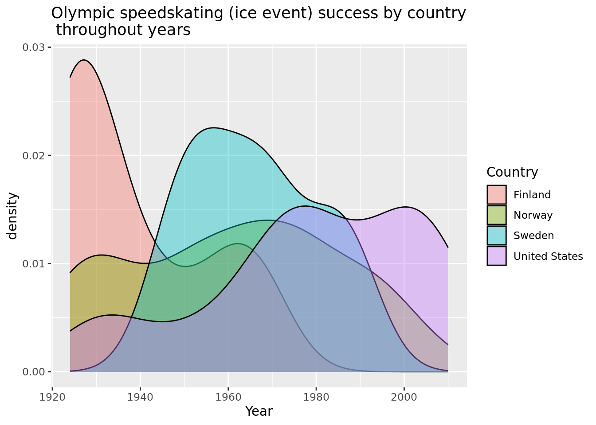

── Attaching packages ─────────────────────────────────────── tidyverse 1.3.2 ──
✔ ggplot2 3.4.0 ✔ purrr 1.0.0
✔ tibble 3.1.8 ✔ dplyr 1.0.10
✔ tidyr 1.2.1 ✔ stringr 1.5.0
✔ readr 2.1.3 ✔ forcats 0.5.2
── Conflicts ────────────────────────────────────────── tidyverse_conflicts() ──
✖ dplyr::filter() masks stats::filter()
✖ dplyr::lag() masks stats::lag()
── Attaching packages ────────────────────────────────────── tidymodels 1.0.0 ──
✔ broom 1.0.2 ✔ rsample 1.1.1
✔ dials 1.1.0 ✔ tune 1.0.1
✔ infer 1.0.4 ✔ workflows 1.1.2
✔ modeldata 1.0.1 ✔ workflowsets 1.0.0
✔ parsnip 1.0.3 ✔ yardstick 1.1.0
✔ recipes 1.0.3
── Conflicts ───────────────────────────────────────── tidymodels_conflicts() ──
✖ scales::discard() masks purrr::discard()
✖ dplyr::filter() masks stats::filter()
✖ recipes::fixed() masks stringr::fixed()
✖ dplyr::lag() masks stats::lag()
✖ yardstick::spec() masks readr::spec()
✖ recipes::step() masks stats::step()
• Dig deeper into tidy modeling with R at https://www.tmwr.orgWinter Olympics Data Analysis
Report
Rows: 2865 Columns: 9
── Column specification ────────────────────────────────────────────────────────
Delimiter: ","
chr (6): Sport, Event, Country, Gender, Medal, Name of Athlete or Team
dbl (3): Year, Medal Rank, Age of Athlete
ℹ Use `spec()` to retrieve the full column specification for this data.
ℹ Specify the column types or set `show_col_types = FALSE` to quiet this message.Rows: 2,865
Columns: 9
$ Year <dbl> 1924, 1924, 1924, 1924, 1924, 1924, 1924, 19…
$ Sport <chr> "Bobsled", "Bobsled", "Bobsled", "Cross-Coun…
$ Event <chr> "Men's Four/Five", "Men's Four/Five", "Men's…
$ Country <chr> "Switzerland", "Britain", "Belgium", "Norway…
$ Gender <chr> "Men", "Men", "Men", "Men", "Men", "Men", "M…
$ `Medal Rank` <dbl> 1, 2, 3, 1, 2, 3, 1, 2, 3, 1, 2, 3, 1, 2, 3,…
$ Medal <chr> "gold", "silver", "bronze", "gold", "silver"…
$ `Name of Athlete or Team` <chr> "Switzerland-1", "Britain-1", "Belgium-1", "…
$ `Age of Athlete` <dbl> NA, NA, NA, 29, 24, 28, 29, 27, 24, NA, NA, …Introduction and Data:
The data comes from Sports Reference. The data was collected five years ago and was scraped from Sports Reference by Randi Griffin, an Evolutionary Anthropology graduate student of Duke University\(^1\). Griffin also competed in the 2018 Winter Olympics on the Unified Korea women’s national ice hockey team. This data was initially made into a visualization that was then further adapted to the current data set.
The observations represent every athlete who has won a medal at the Winter Olympics. The original data set has 2865 observations. The dataset has nine values: Year, Sport, Event, Country, Gender, Medal Rank, Medal, Name of Athlete or Team, and Age of Athlete. Therefore, the data includes both individual medal winners as well as winning teams, and also includes medalists from countries that no longer exist.
A possible issue with this dataset is that the Olympics page on Sports Reference has since been removed from the website. Due to low traffic on the Olympics page, less work was done to check over the information and verify that it is all correct. Sports Reference subsequently decided it was better to take down the data set. Because of this, a few of the names of the athletes are slightly misspelled or have extraneous characters, and the page was not updated with results from the 2018 or 2022 Winter Olympics. Despite this, the data was collected ethically. Sports Reference is cited as the source of the data, and all of the terms of use listed on the Sports Reference website appear to have been followed when the data was taken.
Sports Reference states that their core purpose is to “democratize data” so that users can better understand the sports that they care about. The site was first launched with Baseball-reference.com in 2000, Pro-Football-Reference.com in 2000, and Basketball-Reference.com in 2004. Sean Forman, the current president of the company that runs Sports Reference, Sports Reference LLC, formed Sports Reference, Inc. in October 2004 and the three separate websites aforementioned combined to create Sports Reference LLC in 2007\(^2\).
Using this data set, our research question is: “To what extent does an athlete’s age, gender, and country influence their Winter Olympic success?” Success will be defined as gold medals won, average medal rank, or total number of medals won depending on the test. One hypothesis that we have developed to help answer this question is that younger athletes will have more gold medals won, on average, than older athletes. We also hypothesize that within each country, men will outperform women (receive more gold medals on average) and that the mean age of male medalists will be greater than the mean age of female medalists. Finally, we predict that countries will have greater success in events more popular to their region of the world.
Literature Review:
This article talks about every Olympic medal winner since 1896. It mentions how the majority of winners have been from the US and this is an ongoing trend. The article also explains how China has been close to the US in amount of medals received throughout time. It also explains how before the USSR’s collapse at the end of the 1980s, the US and the USSR had similar trends. Overall, this article gives us evidence of the trends between the different countries in the Olympics, particularly the trends of the US, China, and USSR \(^3\).
Our research question is different from the article that we cited because the article does not differentiate the medals won solely in the Winter Olympics, but rather the Winter and Summer Olympics. It also does not specify trends in Olympic success based on gender and event type.
Methodology:
Our research topic focuses on analyzing the demographics of athletes who have won medals at the Winter Olympics. We plan to answer our research question through trend identification. We plan to gather results from our data by creating visualizations comparing factors such as gender, age, and Olympic event to see which most greatly affects Olympic winter success. These visuals will include histograms, scatter plots, and box plots to answer specific questions (depending on the nature of the variable in question). The variables represented, with the exception of age, are all categorical variables: countries, athletes, events, type of medals, and years.
Adding Additional Variables
# A tibble: 3 × 2
category n
<chr> <int>
1 Ice 1312
2 Nordic 933
3 Skiing/Snowboarding 620We used a source from Topend Sports to create the variable of Nordic Events. Nordic events include Biathalon (combining cross-country skiing and target shooting: individual, sprint, pursuit, mass start & relay events), Cross-Country Skiing (individual and team sprint, freestyle, pursuit, classical and relays), Ski Jumping and Nordic Combined (ski jumping and cross-country skiing). Winter Olympic events are divided between ice, Nordic, and skiing/snowboarding events and we made this distinction to better compare different country’s success \(^4\).
Methodology continued
****AGE****
What is the relationship between age and medals won in individual Winter Olympics events?

It appears that there is no significant relationship between medal earned and how old the athlete is. It appears that there are likely other factors that contribute to whether an athlete wins a bronze, silver or gold medal. A box plot was used to show this data since one categorical variable is being compared to one continuous variable. It appears that in all 3 medal categories (bronze, silver, and gold), the median age of the athlete who won the medal was approximately 25 years old. Ages of athletes who won bronze medals ranged from approximately 13 to 37 years old with a few outliers who were about 38, 40, and 41 years old. Ages of athletes who won silver medals ranged from approximately 15 to 37 years old with outliers at 38, 39, 41, and 42 years old. Ages of athletes who won gold medals ranged from approximately 15 to 36 years old with outliers at 39 and 40 years old. It appears that athletes across all 3 categories had similar ranges of ages and the same median. We can infer from this visualization that the relationship between Winter Olympic success and age is similar for athletes who won bronze, silver, and gold medals.
What is the relationship between age and quantity of medals won in the Winter Olympics across different sports categories?

Because we did not see a significant different in our results in the previous visualization, we decided to facet our graph by event (ice, Nordic, and skiing/snowboarding). This visualization shows that when the type of Winter Olympic sport category is specified, there is a slight trend toward more success in Nordic events with athletes older in their 20s. It also appears that athletes winning medals in Nordic events are on average older than those winning medals in Ice and Skiing/Snowboarding events. There appears to be an outlier with a medal earned in a Nordic event by an Olympian who was younger than 20. There are also outliers with some participants above 40 years old winning medals in ice and nordic events. The median age of athletes for ice events was the same across all 3 categories of medals (bronze, silver, and gold) and was approximately 24 years old. The median age of athletes for skiing and snowboarding events was also the same across all 3 categories of medals and was approximately 24 years old. The median age of athletes for nordic events was higher than ice and skiing events and ranged from approximately 26 to 27 years old. It appears that athletes who won silver and gold medals in nordic events had a median of about 1 year older than athletes who won bronze medals. Additionally, in nordic and skiing/snowboarding events, the range of ages of athletes who won gold medals were generally smaller than the range of ages for athletes who won silver and bronze medals.
Null Hypothesis:
\(\mu_{nordic} = \mu_{other}\)
The average age of nordic event medal winners will be equal to that of medal winners in other events.
Alternative hypothesis:
\(\mu_{nordic} \neq \mu_{other}\)
The average age of nordic event medal winners will not be equal to that of medal winners in other events.
# A tibble: 2 × 2
Sports_category mean_age
<chr> <dbl>
1 Nordic event 26.6
2 Other event 24.5[1] 2.10957\(\bar{x}\) = 2.10957
Warning: Please be cautious in reporting a p-value of 0. This result is an
approximation based on the number of `reps` chosen in the `generate()` step. See
`?get_p_value()` for more information.# A tibble: 1 × 1
p_value
<dbl>
1 0When using an alpha value of 0.01, a p-value of far less than 0.01 (approximately 0) was calculated. Thus, the null hypothesis of the mean age of nordic event medal winners being equal to the mean age of other event winners can be rejected and there is strong evidence to accept the alternative. Therefore, being older likely does benefit an Olympian when competing in a Nordic event.
What is the true mean age of gold medal winning Olympians?
# A tibble: 1 × 2
lower upper
<dbl> <dbl>
1 24.8 25.3We are 90% confident the true mean age of gold medal winning winter Olympic athletes is between 24.80165 and 25.29201 years old.

Does the year of the Winter Olympics (pre-1970 vs post-1970) affect how old the participants are?
# A tibble: 2 × 2
Year_Classification mean_age
<chr> <dbl>
1 Older Olympics 25.0
2 Recent Olympics 25.2It is seen that the average age of a medal-winning Winter Olympic athlete is nearly identical in Winter Olympics less than and greater than 50 years ago.
How does Winter Olympic age change with each successive year?
# A tibble: 2 × 5
term estimate std.error statistic p.value
<chr> <dbl> <dbl> <dbl> <dbl>
1 (Intercept) 5.96 12.7 0.471 0.638
2 Year 0.00961 0.00638 1.51 0.132[1] 4079.131For every 1 year increase, we estimate a mean change of 0.009 years in age for a Winter Olympic gold medal winner. This shows that age for the top athletes remains pretty consistent over time, meaning the winningest athletes are not getting older or younger throughout time, they are mostly the same age. Therefore, this data suggests that the age of the medalists has not influenced success over time.
\(\widehat{Athlete\_Age} = 5.963 + 0.0096*Year\)
Gender
Is average Olympian medal winner age affected by gender?
We hypothesize that the mean age of medal winning male athletes is greater than the mean age of female medalists.
Null Hypothesis:
\(\mu_m = \mu_f\)
The mean age of male medalists is equal to the mean age of female medalists.
Alterantive Hypothesis:
\(\mu_m \neq \mu_f\)
The mean age of male medalists is not equal to the mean age of female medalists.
# A tibble: 2 × 2
Gender mean_age
<chr> <dbl>
1 Men 25.5
2 Women 24.6[1] 0.89543\(\bar{x}\) = 0.89543
Warning: Please be cautious in reporting a p-value of 0. This result is an
approximation based on the number of `reps` chosen in the `generate()` step. See
`?get_p_value()` for more information.# A tibble: 1 × 1
p_value
<dbl>
1 0The p-value is 0. This is likely not exactly 0, but rather a value that is so small that it is rounded to 0 in this format.
This means that there is a probability of 0 that there is a difference of 0.89543 years in the average age of medalists between genders given that the mean age of medalists is equal for men and women.
For a significance value of 0.01, our p-value is less than the significance value. Therefore, we can reject the null hypothesis (that the average age of male and females are equal), and have strong evidence to support the alternative hypothesis.
Do American men, on average, have greater overall success than American females in Winter Olympics?
We hypothesize that men, on average, will have more success than American females in Winter Olympics.
Null hypothesis:
\(\mu_m = \mu_f\)
Alternative Hypothesis:
\(\mu_m \neq \mu_f\)
# A tibble: 2 × 2
Gender mean
<chr> <dbl>
1 Men 1.93
2 Women 1.96\(\bar{x}\) = -0.027865
It appears that men and women in the United States are nearly identical in their success in the Winter Olympics, as measured by average medal won (average medal rank). This shows that the average medal received in the Winter Olympics across all years was silver in both genders. This is because the value is almost exactly 2, which corresponds to silver.
# A tibble: 1 × 1
p_value
<dbl>
1 0.71This p-value is 0.71 which means that given the null hypothesis is true (the mean medal rank for men and women in the United States is equal), there is a 0.71 chance that the alternative hypothesis is true. Therefore, given an \(\alpha\) = 0.01, this null hypothesis cannot be rejected.
# A tibble: 2 × 5
term estimate std.error statistic p.value
<chr> <dbl> <dbl> <dbl> <dbl>
1 (Intercept) 1.93 0.0644 29.9 1.21e-87
2 GenderWomen 0.0279 0.0985 0.283 7.77e- 1# A tibble: 2 × 5
term estimate std.error statistic p.value
<chr> <dbl> <dbl> <dbl> <dbl>
1 (Intercept) 1.86 0.306 6.07 0.00000000559
2 `Age of Athlete` 0.00107 0.0128 0.0833 0.934 # A tibble: 3 × 5
term estimate std.error statistic p.value
<chr> <dbl> <dbl> <dbl> <dbl>
1 (Intercept) 1.79 0.325 5.51 0.000000104
2 `Age of Athlete` 0.00260 0.0131 0.199 0.842
3 GenderWomen 0.0741 0.112 0.662 0.509 # A tibble: 4 × 5
term estimate std.error statistic p.value
<chr> <dbl> <dbl> <dbl> <dbl>
1 (Intercept) 1.92 0.427 4.50 0.0000110
2 `Age of Athlete` -0.00294 0.0174 -0.169 0.866
3 GenderWomen -0.225 0.626 -0.359 0.720
4 `Age of Athlete`:GenderWomen 0.0128 0.0264 0.485 0.628 [1] 653.4385[1] 531.4047[1] 532.961[1] 534.7218Medal rank and gender: \(\widehat{Medal\_Rank} = 1.929 + 0.02786*GenderWomen\)
Medal rank and gender and age (additive): \(\widehat{Medal\_Rank} = 1.78923 + 0.002598*Age\_of\_Athlete + 0.07410*GenderWomen\)
Medal rank and gender and age (interactive): \(\widehat{Medal\_Rank} = 1.9233 - 0.00294*Age\_of\_Athlete - 0.2245*GenderWomen + 0.01279*Age\_of\_Athlete*GenderWomen\)
The additive model for predicting medal rank with gender and age is the best model since it has the lowest AIC value. However, this AIC value is nearly identical to the interactive model with the same explanatory variables included. By looking at the AIC values, age is the best predictor of medal rank, as the age model has a lower AIC value than the gender model or the additive or interactive models. These models say that for every one year increase of age, the mean medal rank increases (more towards silver and bronze) and this effect is heightened when the athlete is a woman. Therefore, this is evidence to suggest that older and female athletes may have less success than younger male athletes in the United States.
Country
Given that a participant was from a Scandinavian country and they won a gold medal, what is the probability that this was in a Nordic event, as these originated in Scandinavia?
# A tibble: 3 × 3
category n prob
<chr> <int> <dbl>
1 Ice 49 0.233
2 Nordic 143 0.681
3 Skiing/Snowboarding 18 0.0857# A tibble: 3 × 3
category n prob
<chr> <int> <dbl>
1 Ice 440 0.459
2 Nordic 312 0.325
3 Skiing/Snowboarding 207 0.216The probability that a gold medal won by a Scandinavian athlete was in a Nordic event is 0.681.
The probability that a gold medal was won in the Winter Olympics in a Nordic event by an athlete from any country is 0.109.
How does the United States compare to Scandinavian countries in speedskating success?

Warning: Groups with fewer than two data points have been dropped.Warning in max(ids, na.rm = TRUE): no non-missing arguments to max; returning
-InfWarning: Groups with fewer than two data points have been dropped.Warning in max(ids, na.rm = TRUE): no non-missing arguments to max; returning
-InfThis density graph shows that the United States has become more successful in speedskating and alpine skiing in recent years. However, in the early Olympic years, Finland had the most success in speedskating and since dropped off. Olympians from Norway and Sweden have had the least success in speedskating in recent years. Additionally, Scandinavian countries have recently started seeing greater success in alpine skiing, but the United States was more successful in the past. Yet, when looking at a Nordic event like cross-country skiing it is seen that the United States does not have any documented medals received while Scandinavian countries appear to outperform in this event as compared to the other two plotted.
Results and Discussion
Before displaying our results, it is important to take into account the potential limitations. Some of these limitations include that there was data removed from Sports Reference – there is no data for the years of 2018 or the 2022 Olympics. Also, the Country names change over time and some athletes’ names have extraneous characters. Moving forward, first we could add in values for the 2018 and 2022 Winter Olympics to look at the history compared to the most recent results. We could also correct misspellings of athletes’ names to potentially look at names in comparison to country. Lastly, we could add event-specific data such as times for timed event to compare success in other ways then medal earnings.
Our initial testing in this draft centered around the relationship between Winter Olympic success and age. The prime age for athletes to win medals was around 25 years old, and these results remained relatively consistent throughout gender and time. However, it was seen to be advatageous to be older when competing in a Nordic Event when compared to other event categories. When looking at medal winners both over 50 years ago and within the last 50 years, the mean age of athletes is very similar. Before 1970, the mean age was 24.95 years old and in the last 50 years, the mean age was 25.22 years old. A bootstrap done to find the true mean age of all medal winners confirmed that we are 90% certain that the true mean age of gold medal winning winter Olympic athletes is between 24.80165 and 25.29201 years old. Both the values from the last 50 years and before the last 50 years fall within this confidence interval.
In comparing the ages of athletes who won each type of medal, there was no relation between the age of the athlete and the type of medal they are winning. For gold, silver, and bronze medals, there are very similar distributions in the ages of the athletes.
In addition, an athlete’s home country can play a role in the sport that they win the medal in. For example, there is a 33% probability that a random medal won at the Winter Olympics is from a Nordic event, such as ski jumping or biathlon. However, if an athlete comes from a Scandinavian country, there is a 68% probability that their medal came from a Nordic event. Therefore, an athlete’s place of birth can also determine their success in certain events.
We also decided to examine disparities between genders when looking at the age and country of winning athletes. There is almost no difference in success by gender within each country. For example, men and women in the United States yielded almost exactly the same medal rank, not one gender performing better than the other. Looking at age, there is a statistically significant differnece in mean age of medal winning males than females.
Work Cited
Griffin, Randi H. “Olympic History: Scraping Data from Sports-Reference.com.” Randigriffin.com, 27 May 2018, http://www.randigriffin.com/2018/05/27/olympic-history-1-web-scraping.html.
“About Sports Reference.” Sports Reference, https://www.sports-reference.com/about.html.
Rogers, Simon. “Olympic Medal Winners: Every One since 1896 as Open Data.” The Guardian, Guardian News and Media, 25 June 2012, https://www.theguardian.com/sport/datablog/2012/jun/25/olympic-medal-winner-list-data.
“List of Winter Olympic Sports.” Topend Sports, https://www.topendsports.com/events/winter/sports/index.htm#:~:text=Winter%20Olympic%20Sports%20for%202022&text=The%2015%20sport%20disciplines%20of,more%20specific%20events%2C%20as%20listed.